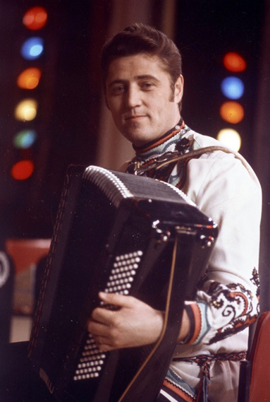

Биография
Виктор Гридин родился в селе Пристенном Пристенского р-на Курской области.
После школы учился в Харьковском музыкальном училище.
В 1962 году окончил Московское музыкальное училище им.
Гнесиных.
Работал в Эстрадно-симфоническом оркестре Всесоюзного радио
и Центрального телевидения под управлением Ю.Силантьева,
затем — в ансамбле им. Александрова.
В 1975 году Виктор Федорович возглавил группу музыкантов,
которая аккомпанировала известной певице — Людмиле Зыкиной.
Годом позже они вместе создали знаменитый
Государственный академический русский народный ансамбль «Россия».
С 1976 по 1993 годы Гридин был главным дирижёром и
солистом этого ансамбля, а Людмила Зыкина — художественным руководителем.
С ансамблем «Россия» много гастролировал по городам СССР и за границей.
В 1987 году был с гастролями по гарнизонам ГСВГ.
Часто приезжал на гастроли в Курск и родную Пристень.
Виктор Гридин является автором многочисленных виртуозных сочинений для баяна,
изданных в грамзаписях.
Скончался 4 апреля 1997 года на 55-м году жизни от гепатита
С, которым он заразился на гастролях. Похоронен на Троекуровском кладбище в Москве.
На могиле В. Ф. Гридина установлен памятник работы народного художника России В. М. Клыкова.